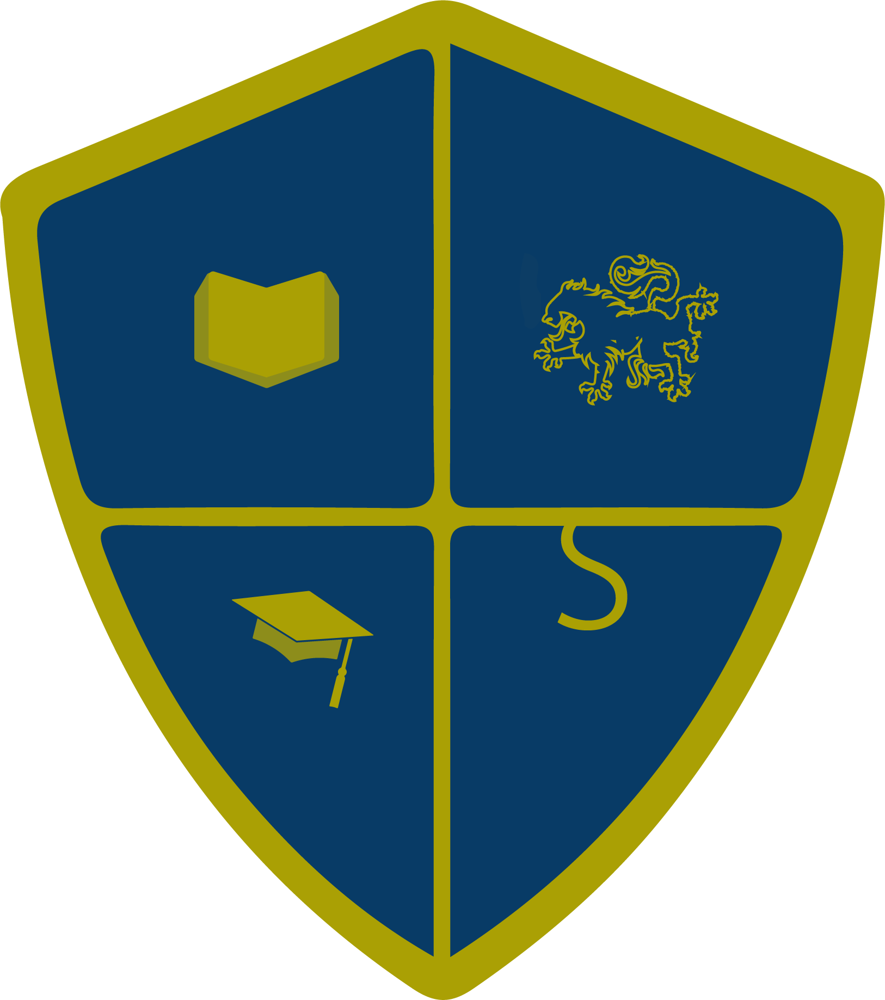

My name is Zintle Meslane. I am a very passionate person,
observant and I am always keen to
learn something new which is
one of the reasons why I love challenges. Being a
student at UWC for a few
years has provided me with many experiences, few of which are being a very
resourceful individual, I can figure things out on my own, and
I am a
fast learner and can use certain tools to the benefit of the client.
Apart from my
eagerness to learn I have very good communication skills,
I listen very carefully with detail and
have the ability to speak clearly so as to
get along well with my co-workers and clients.
I work well under pressure.
I consider respecting my time as well as the time of others very
important
, which makes punctuality as one of my special qualities.
Being exposed to coding has allowed
me to
acquire different qualities as an individual, as well as in my profession.
Developed a school website for Mzamomtsha Primary School.
You can check the website by clicking here:

HTML5, CSS3, JavaScript
BA in Psychology and Ethics (Degree) at the University of the Western Cape